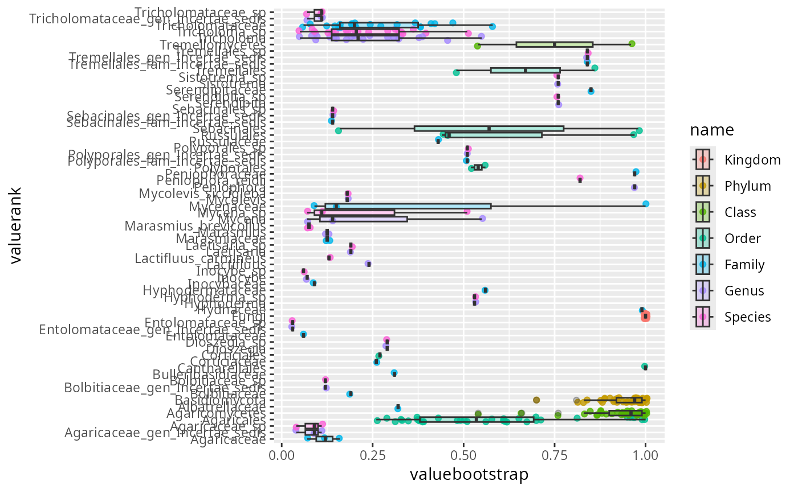

Please cite Vsearch if you use this function to assign taxonomy.
Usage
assign_sintax(
physeq = NULL,
ref_fasta = NULL,
seq2search = NULL,
behavior = c("return_matrix", "add_to_phyloseq", "return_cmd"),
vsearchpath = "vsearch",
clean_pq = TRUE,
nproc = 1,
suffix = "",
taxa_ranks = c("Kingdom", "Phylum", "Class", "Order", "Family", "Genus", "Species"),
min_bootstrap = 0.5,
keep_temporary_files = FALSE,
verbose = FALSE,
temporary_fasta_file = "temp.fasta",
cmd_args = "--sintax_random",
too_few = "align_start",
too_many = "drop"
)Arguments
- physeq
(required): a
phyloseq-classobject obtained using thephyloseqpackage.- ref_fasta
(required) A link to a database in vsearch format The reference database must contain taxonomic information in the header of each sequence in the form of a string starting with ";tax=" and followed by a comma-separated list of up to nine taxonomic identifiers. Each taxonomic identifier must start with an indication of the rank by one of the letters d (for domain) k (kingdom), p (phylum), c (class), o (order), f (family), g (genus), s (species), or t (strain). The letter is followed by a colon (:) and the name of that rank. Commas and semicolons are not allowed in the name of the rank. Non-ascii characters should be avoided in the names.
Example:
\>X80725_S000004313;tax=d:Bacteria,p:Proteobacteria,c:Gammaproteobacteria,o:Enterobacteriales,f:Enterobacteriaceae,g:Escherichia/Shigella,s:Escherichia_coli,t:str._K-12_substr._MG1655
- seq2search
A DNAStringSet object of sequences to search for. Replace the physeq object.
- behavior
Either "return_matrix" (default), "return_cmd", or "add_to_phyloseq":
"return_matrix" return a list of two matrix with taxonomic value in the first element of the list and bootstrap value in the second one.
"return_cmd" return the command to run without running it.
"add_to_phyloseq" return a phyloseq object with amended slot
@taxtable. Only available if using physeq input and not seq2search input.
- vsearchpath
(default: "vsearch") path to vsearch
- clean_pq
(logical, default TRUE) If set to TRUE, empty samples and empty ASV are discarded before clustering.
- nproc
(default: 1) Set to number of cpus/processors to use
- suffix
(character) The suffix to name the new columns. If set to "" (the default), the taxa_ranks algorithm is used without suffix.
- taxa_ranks
A list with the name of the taxonomic rank present in ref_fasta
- min_bootstrap
(Float [0:1], default 0.5) Minimum bootstrap value to inform taxonomy. For each bootstrap below the min_bootstrap value, the taxonomy information is set to NA.
- keep_temporary_files
(logical, default: FALSE) Do we keep temporary files?
temporary_fasta_file (default "temp.fasta") : the fasta file from physeq or seq2search
"output_taxo_vs.txt" : see Vsearch Manual for parameter –tabbedout
- verbose
(logical). If TRUE, print additional information.
- temporary_fasta_file
The name of a temporary_fasta_file (default "temp.fasta")
- cmd_args
Additional arguments passed on to vsearch sintax cmd. By default cmd_args is equal to "–sintax_random" as recommended by Torognes.
- too_few
(default value "align_start") see
tidyr::separate_wider_delim()- too_many
(default value "drop") see
tidyr::separate_wider_delim()
Details
This function is mainly a wrapper of the work of others. Please cite vsearch.
Examples
# \donttest{
assign_sintax(data_fungi_mini,
ref_fasta = system.file("extdata", "mini_UNITE_fungi.fasta.gz", package = "MiscMetabar"),
behavior = "return_cmd"
)
#> [1] "vsearch --sintax temp.fasta --db /tmp/Rtmp4coA3a/temp_libpath13a55f7c99/MiscMetabar/extdata/mini_UNITE_fungi.fasta.gz --tabbedout output_taxo_vs.txt --threads 1 --sintax_random"
data_fungi_mini_new <- assign_sintax(data_fungi_mini,
ref_fasta = system.file("extdata", "mini_UNITE_fungi.fasta.gz", package = "MiscMetabar"),
behavior = "add_to_phyloseq"
)
assignation_results <- assign_sintax(data_fungi_mini,
ref_fasta = system.file("extdata", "mini_UNITE_fungi.fasta.gz", package = "MiscMetabar")
)
left_join(
tidyr::pivot_longer(assignation_results$taxo_value, -taxa_names),
tidyr::pivot_longer(assignation_results$taxo_bootstrap, -taxa_names),
by = join_by(taxa_names, name),
suffix = c("rank", "bootstrap")
) |>
mutate(name = factor(name,
levels = c(
"Kingdom", "Phylum", "Class",
"Order", "Family", "Genus", "Species"
)
)) |>
# mutate(valuerank = forcats::fct_reorder(valuerank,
# as.integer(name), .desc = TRUE)) |>
ggplot(aes(valuebootstrap,
valuerank,
fill = name
)) +
geom_jitter(alpha = 0.8, aes(color = name)) +
geom_boxplot(alpha = 0.3)

# }